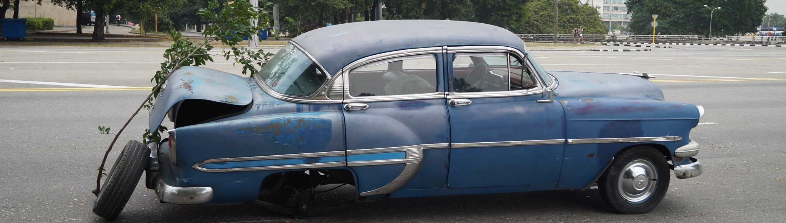
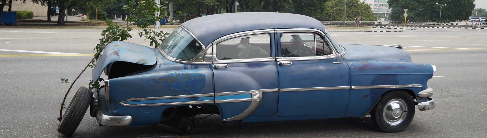

- Soorten
- Budgettering
-
Merken
 Toyota
Toyota Volkswagen
Volkswagen
 Ford
Ford
 Mercedes-Benz
Mercedes-Benz
 BMW
BMW
 Audi
Audi
 Hyundai
Hyundai
 Tesla
Tesla
 Renault
Renault
 Peugeot
Peugeot
 
Nieuw kopen versus tweedehands: de voor- en nadelen
Wanneer u besluit een auto te kopen, is een van de belangrijkste beslissingen die u moet nemen, de keuze tussen een nieuwe en een tweedehands auto. Hier zijn enkele voor- en nadelen van beide opties:
Nieuwe auto
Voordelen:
- Garantie: Nieuwe auto’s worden meestal geleverd met een fabrieksgarantie die de kosten van reparatie of vervanging van defecte onderdelen dekt.
- Technologie: Nieuwe auto’s hebben meestal de nieuwste technologie op het gebied van veiligheid en comfort.
- Betrouwbaarheid: Met een nieuwe auto is er minder kans op onverwachte storingen.
Nadelen:
- Kosten: Een nieuwe auto zal meer kosten dan een tweedehands auto.
- Afschrijving: Een nieuwe auto verliest snel zijn waarde in de eerste paar jaar.
Tweedehands auto
Voordelen:
- Kosten: Een tweedehands auto kan aanzienlijk goedkoper zijn dan een nieuwe.
- Afschrijving: Een tweedehands auto kan minder afschrijving hebben.
Nadelen:
- Staat: Een tweedehands auto kan mechanische problemen hebben of reparatie nodig hebben.
- Geschiedenis: Het is misschien niet altijd duidelijk hoe de vorige eigenaar voor de auto heeft gezorgd.
Het is belangrijk om grondig onderzoek te doen en alle factoren te overwegen voordat u een beslissing neemt.